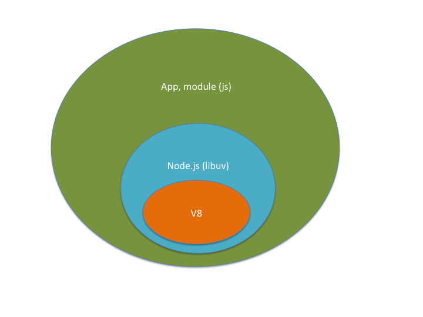
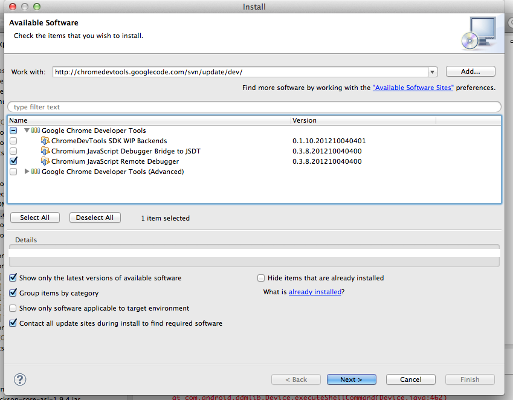
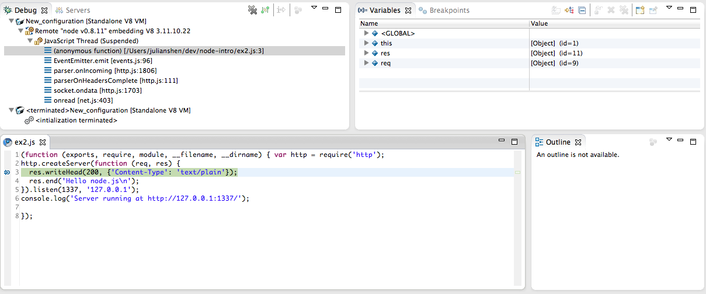

Introduction to node.js
* Julian Shen
What's node.js?
- * It's not a new language
- * It's an ecosystem with javascript
- * Built upon Google V8 engine
- * Server side javascript
- * Not just server side javascript
V8 + Common Javascript APIs

Why server side javascript?
- * Popular langauge
- * Easy to learn
- * Lot of front end developers
- * Develop client/server in same manner
- * SSJS is not a new concept
- * Netscape tried but failed
- * V8 is fast now
Characteristic
- * Simple and efficient
- * No multithread
- * Event driven/Non blocking
- * Young and growing
Young and growing
- * Version evolves very fast (v0.8.14)
- * Growing modules on npm repository
Using node.js
What version should I install?
Using node with NVM
- * "nvm install 0.8.14"
- * "nvm use 0.8.14"
- * "nvm ls"
First example - hello node
Way too simple?
Making good use of existed stuffs - Module
Use "connect" to enhance server
Install connect: "npm i connect"Where does module go : "node_modules"
Dependiencies :
connect@2.6.1 node_modules/connect
├── fresh@0.1.0
├── pause@0.0.1
├── bytes@0.1.0
├── cookie-signature@0.0.1
├── cookie@0.0.4
├── crc@0.2.0
├── debug@0.7.0
├── qs@0.5.1
├── formidable@1.0.11
└── send@0.1.0 (mime@1.2.6, range-parser@0.0.4)
Let's try some codes
connect = require('connect');
var app = connect()
.use(connect.logger('dev'))
.use(connect.static('public'))
.use(function(req, res){
res.end('hello world\n');
})
.listen(3000);
What's different
- * "require" the module
- * support static files
Not enough?
Install Express.js
- * npm install express -g
- * express my_project
Give me more!!!
Visit 
Debug
Install Chrome dev tools

Debug
- * Run "node --debug ex2.js"
- * Create a debug configuration (standalone V8 VM)
- * Set your break point
